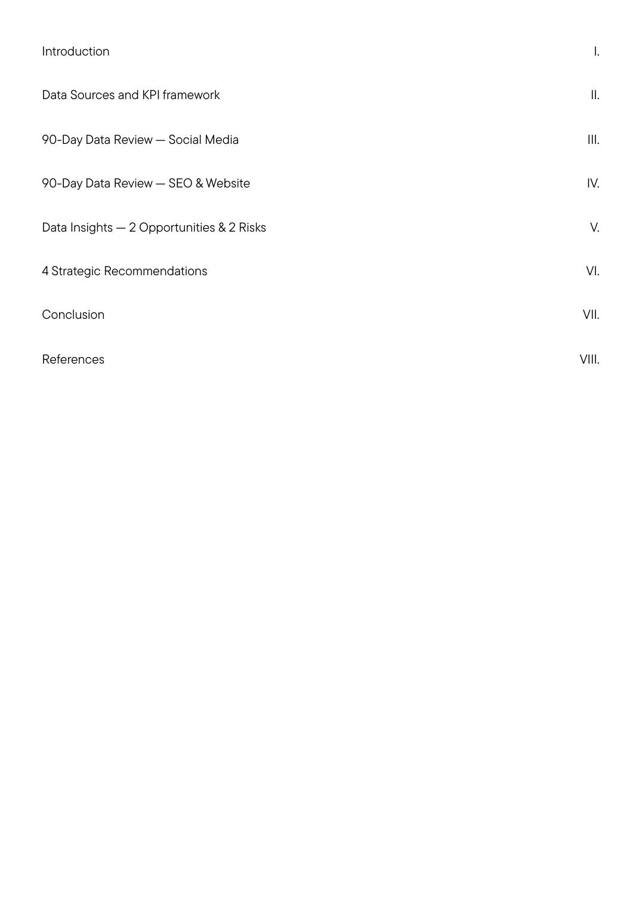
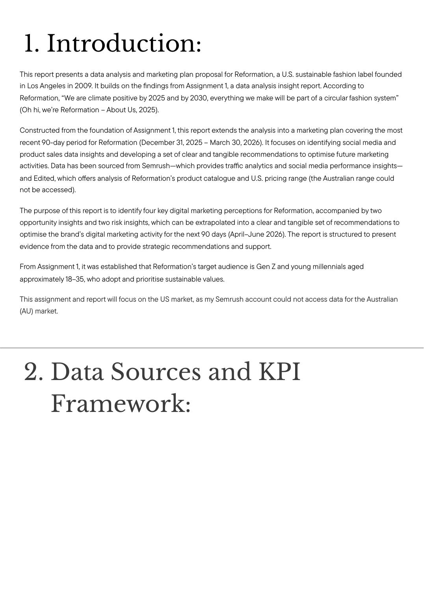
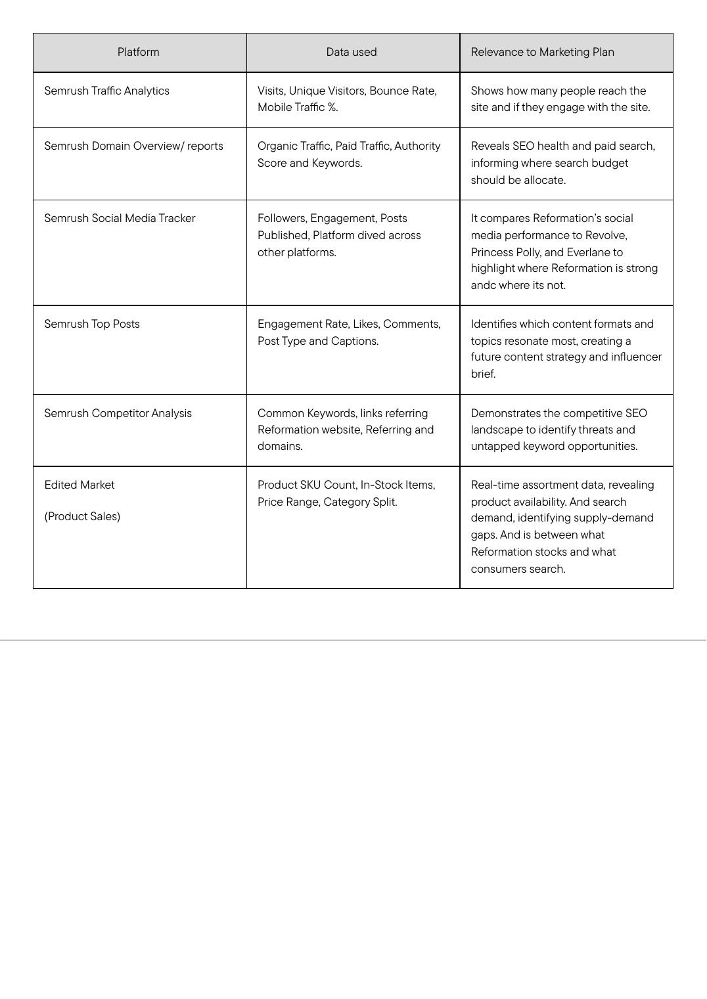
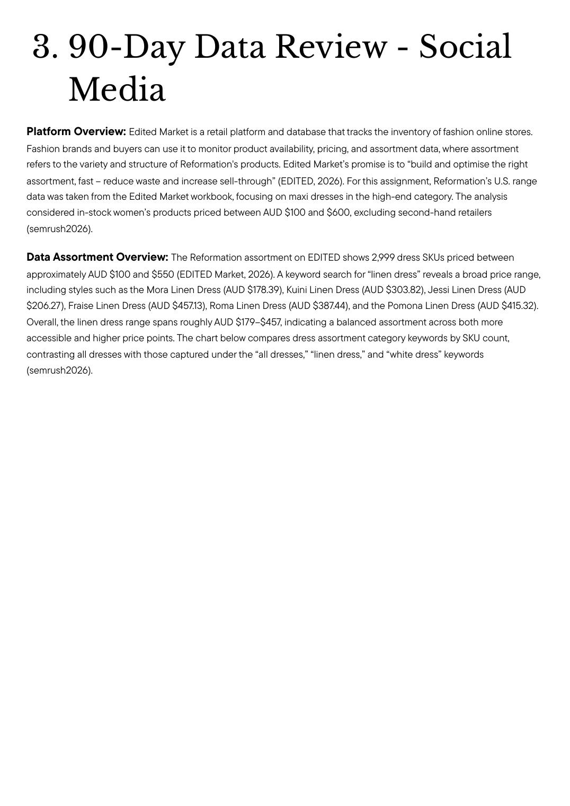

Brief
Analyse Reformation's last 90 days of digital performance and propose a data-backed marketing plan for the next 90.
Reformation positions itself as climate-positive by 2025 and fully circular by 2030. The brand has a defined Gen Z / young millennial audience (18–35, sustainability-led), but the question for this brief was tighter: where is the digital marketing actually working, where is it leaking, and what should the next quarter look like in concrete terms?
Approach
I built a KPI framework across six data sources — Semrush traffic analytics, domain overview, social media tracker, top posts, competitor analysis, and Edited's market data on SKU count, in-stock items, price ranges and category split. Each platform was mapped to a specific marketing question: are people arriving, are they engaging, where is paid vs. organic working, which competitors are gaining ground, and is the assortment doing its job?
The window was Dec 31 2025 – Mar 30 2026. Comparison set: Revolve, Princess Polly, and Everlane. Analysis was extrapolated into two opportunity insights, two risk insights, and four strategic recommendations for April–June 2026.




The data didn't tell us what to do. It told us where the bets were already paying off — and where the brand was leaving traffic on the table.
Outcome
Two opportunities, two risks, four recommendations — each tied directly to a metric and a budget line.
The deliverable was a full marketing plan structured to be actioned, not just read: which content formats and topics to lean into based on top-post engagement, where the competitive SEO landscape exposed untapped keywords, how the assortment data should reshape the next drop calendar, and where paid vs. organic should rebalance for Q2.